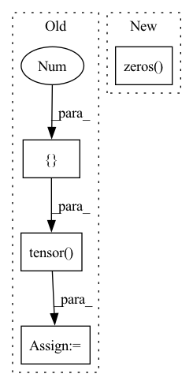

Pattern ID :2015
Before Change
if i<j:
ref_mat[i, j] = True
loss = torch.tensor([0. ], device=score_paired.device)
fp = score_paired[(pred_mat==True) & (ref_mat==False)]
if len(fp) > 0:
loss += self.fp_weight * self.loss_fn(fp, torch.zeros_like(fp))
After Change
pred_sc, pred_s, pred_bp, param = self.model(seq, return_param=True)
ref_sc, ref_s, ref_bp = self.model(seq, param=param, constraint=pair, max_internal_length=None)
loss = torch.zeros( (len(param),), device=param[0]["score_paired"].device)
for k in range(len(seq)):
score_paired = (param[k]["score_paired"] + 1) / self.model.gamma
pred_mat = torch.zeros_like(score_paired, dtype=torch.bool)In pattern: SUPERPATTERN
Frequency: 4
Non-data size: 4
Instances Fragment ID: 8907349
Project Name: mxfold/mxfold2
Commit Name: 2ea6f97cde698aed0d39b9aadd8e295c0905fdb4
Time: 2019-11-27
Author: satoken@bio.keio.ac.jp
File Name: dnnfold/train.py
M Class Name: PiecewiseLoss
N Class Name: PiecewiseLoss
M Method Name: forward(4)
N Method Name: forward(4)
M Parent Class: nn.Module
N Parent Class: nn.Module
M File Name: dnnfold/train.py
N File Name: dnnfold/train.py
M Start Line: 79
M End Line: 110
N Start Line: 80
N End Line: 112
Before Change
self.training = training
if self.version not in ["B0", "S0"]:
raise ValueError("Invalid EvoNorm version")
U = uniform.Uniform(torch.tensor([0.0]), torch.tensor([1.0 ]) )
self.gamma = nn.Parameter(U.sample(torch.Size([self.insize])).view(self.insize))
self.beta = nn.Parameter(torch.zeros(self.insize))
if self.non_linear:
After Change
if self.version not in ["B0", "S0"]:
raise ValueError("Invalid EvoNorm version")
self.gamma = nn.Parameter(torch.ones(1, self.insize, 1, 1))
self.beta = nn.Parameter(torch.zeros( 1, self.insize, 1, 1) )
if self.non_linear:
self.v = nn.Parameter(torch.ones(1,self.insize,1,1))
Fragment ID: 8907344
Project Name: digantamisra98/evonorm
Commit Name: f97cd801db448b31852a1cb52a8bbd24798fbad5
Time: 2020-04-08
Author: mishradiganta91@gmail.com
File Name: evonorm2d.py
M Class Name: EvoNorm2D
N Class Name: EvoNorm2D
M Method Name: __init__(5)
N Method Name: __init__(5)
M Parent Class: nn.Module
N Parent Class: nn.Module
M File Name: evonorm2d.py
N File Name: evonorm2d.py
M Start Line: 25
M End Line: 32
N Start Line: 23
N End Line: 29
Before Change
self.layer_count = layer_count
self.sample_token_count = sample_token_count
self.start_token = torch.tensor([start_token]).to(torch.long)
self.pad_token = torch.tensor([1 ]) .to(torch.long)
self.condition_factor = torch.tensor([10]).to(torch.float)
// if torch.cuda.is_available():
// self.start_token = self.start_token.cuda()After Change
attention_head_count,
embed_count // attention_head_count
)
self.zero_prob = torch.zeros( [1])
self.token_indices = torch.arange(self.sample_token_count)
self.start_token = torch.tensor([start_token]).to(torch.long)
if torch.cuda.is_available():
self.zero_prob = self.zero_prob.cuda() Fragment ID: 8907354
Project Name: kuprel/min-dalle
Commit Name: 17c96fe110fad3d48ea591dcd46475f521499770
Time: 2022-06-28
Author: brkuprel@gmail.com
File Name: min_dalle/models/dalle_bart_decoder_torch.py
M Class Name: DalleBartDecoderTorch
N Class Name: DalleBartDecoderTorch
M Method Name: __init__(11)
N Method Name: __init__(11)
M Parent Class: nn.Module
N Parent Class: nn.Module
M File Name: min_dalle/models/dalle_bart_decoder_torch.py
N File Name: min_dalle/models/dalle_bart_decoder_torch.py
M Start Line: 127
M End Line: 129
N Start Line: 129
N End Line: 161